Soru 1Cevap: C
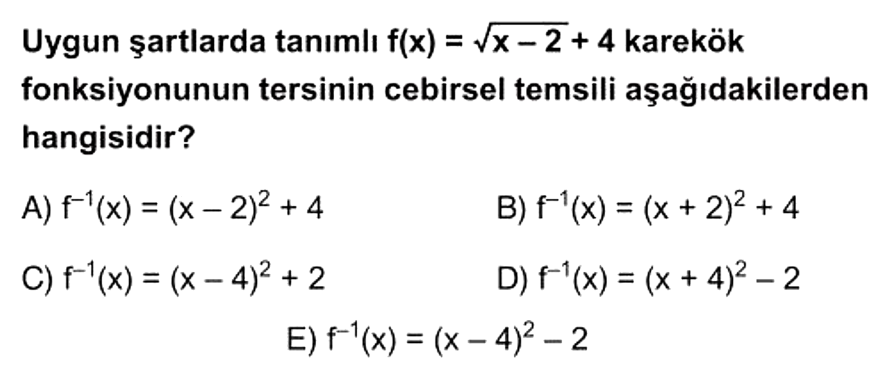
Çözüm
- $y=\sqrt{x-2}+4\Rightarrow\sqrt{x-2}=y-4$.
- $x=(y-4)^2+2$.
- $f^{-1}(x)=(x-4)^2+2$ (C).
Cevap: C
Soru 2Cevap: D
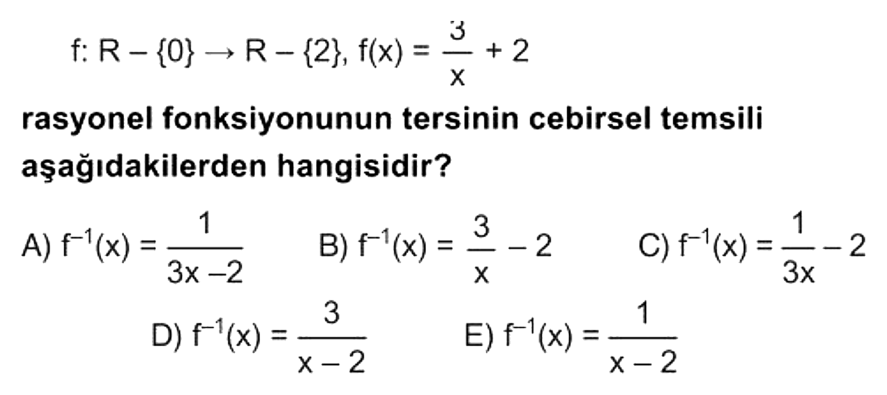
Çözüm
- $y=\dfrac3x+2\Rightarrow y-2=\dfrac3x$.
- $x=\dfrac3{y-2}$.
- $f^{-1}(x)=\dfrac3{x-2}$ (D).
Cevap: D
Soru 3Cevap: E
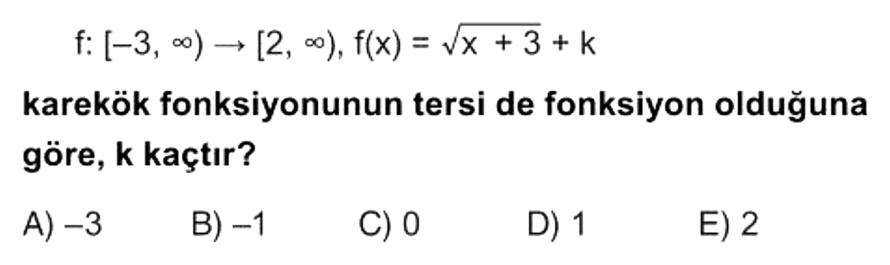
Çözüm
- Tersin fonksiyon olması için $f$ örten olmalı: görüntü kümesi $[2,\infty)$.
- $\sqrt{x+3}\ge0\Rightarrow f(x)\ge k$: görüntü $[k,\infty)$.
- $k=2$ (E).
Cevap: E
Soru 4Cevap: A
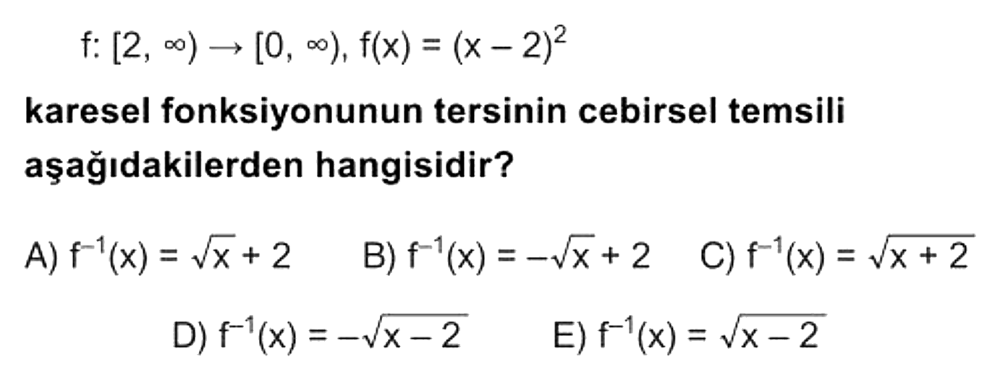
Çözüm
- $y=(x-2)^2$, $x\ge2$.
- $x-2=\sqrt y$.
- $f^{-1}(x)=\sqrt x+2$ (A).
Cevap: A
Soru 5Cevap: A
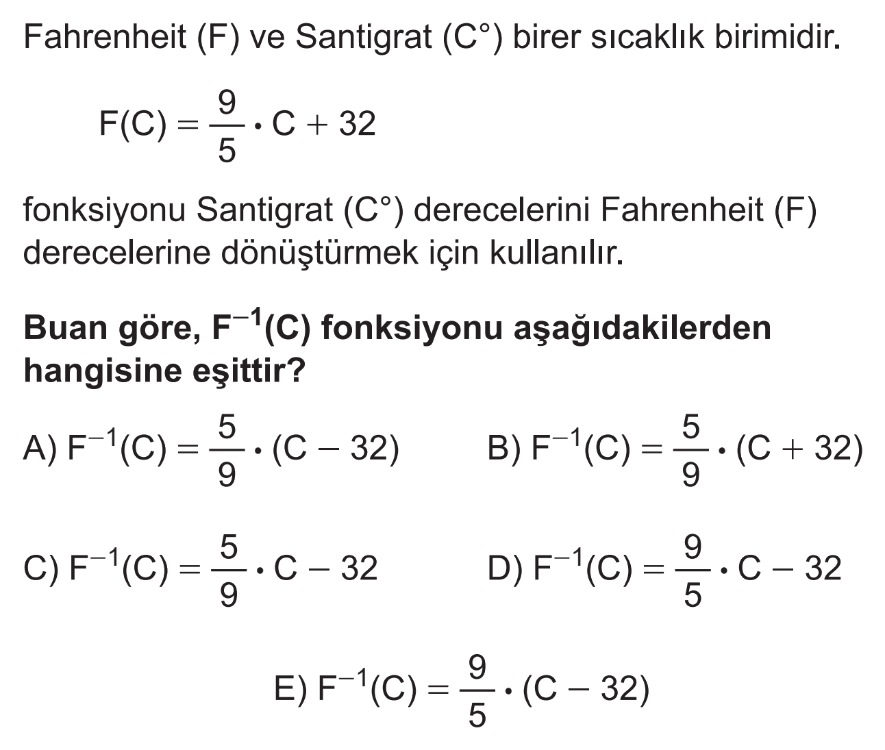
Çözüm
- $F=\dfrac95C+32$.
- $F-32=\dfrac95C\Rightarrow C=\dfrac59(F-32)$.
- $F^{-1}(C)=\dfrac59(C-32)$ (A).
Cevap: A
Soru 6Cevap: D
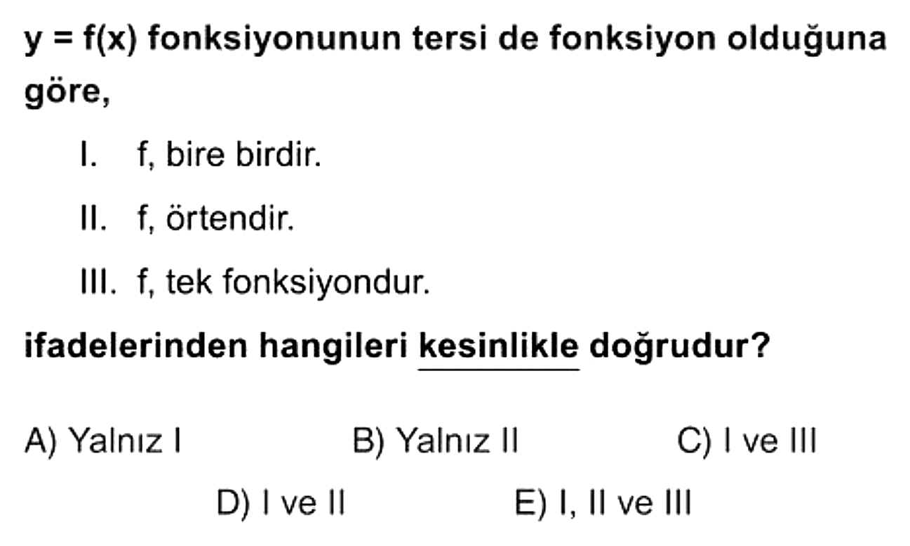
Çözüm
- Tersin fonksiyon olması için $f$ bire bir (I) ve örten (II) olmalıdır.
- Tek fonksiyon olmak gerekmez: örneğin $f(x)=x+1$'in tersi vardır ama tek değildir.
- Kesinlikle doğru olanlar I ve II (D).
Cevap: D
Soru 7Cevap: A
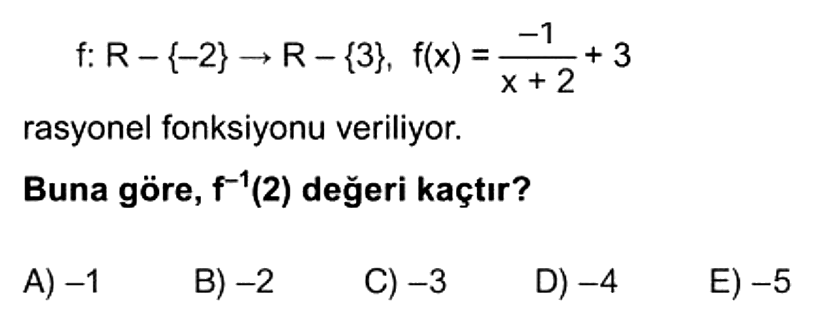
Çözüm
- $f^{-1}(2)=a\iff f(a)=2$.
- $-\dfrac1{a+2}+3=2\Rightarrow\dfrac1{a+2}=1$.
- $a=-1$ (A).
Cevap: A
Soru 8Cevap: C
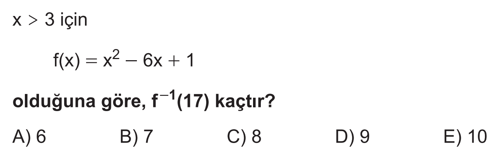
Çözüm
- $f^{-1}(17)=x\iff f(x)=17$.
- $x^2-6x+1=17\Rightarrow x^2-6x-16=0\Rightarrow(x-8)(x+2)=0$.
- $x\gt3$ olduğundan $x=8$ (C).
Cevap: C
Soru 9Cevap: D
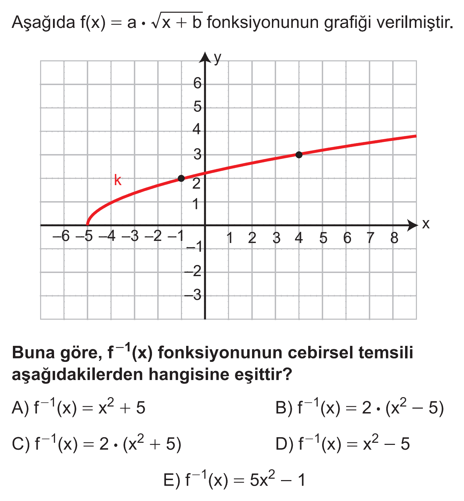
Çözüm
- Başlangıç noktası $(-5,0)$: $b=5$; $(4,3)$'ten geçer: $a\cdot3=3\Rightarrow a=1$.
- $y=\sqrt{x+5}\Rightarrow x=y^2-5$.
- $f^{-1}(x)=x^2-5$ (D).
Cevap: D
Soru 10Cevap: B
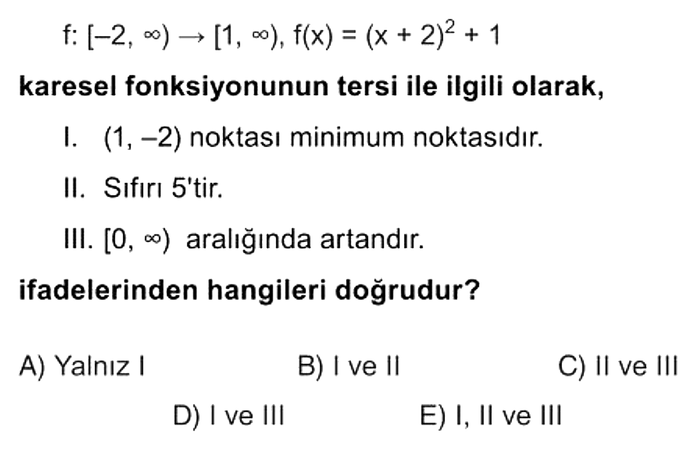
Çözüm
- $f^{-1}(x)=\sqrt{x-1}-2$, $[1,\infty)\to[-2,\infty)$; en küçük değer $(1,-2)$'de (I).
- $\sqrt{x-1}=2\Rightarrow x=5$ (II).
- $f^{-1}$, $[0,1)$'de tanımlı değil: III yanlış. Cevap B.
Cevap: B
Soru 11Cevap: C
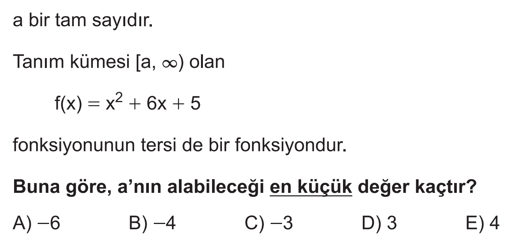
Çözüm
- $x^2+6x+5=(x+3)^2-4$; tepe $x=-3$.
- Tersin fonksiyon olması için $f$ bire bir olmalı: $[a,\infty)$ tepenin sağında kalmalı, $a\ge-3$.
- En küçük $a=-3$ (C).
Cevap: C
Soru 12Cevap: B
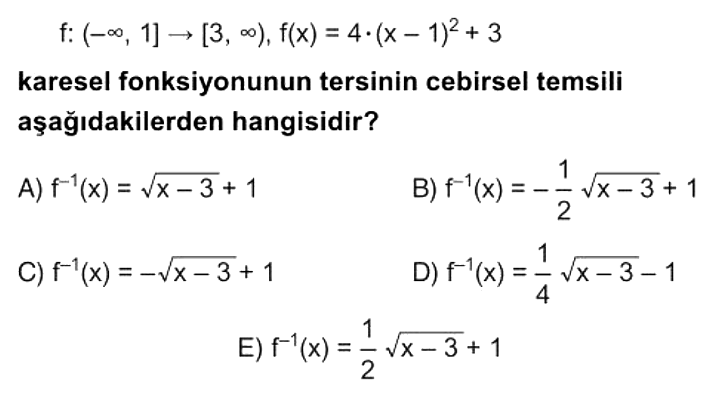
Çözüm
- $y=4(x-1)^2+3\Rightarrow(x-1)^2=\dfrac{y-3}4$.
- $x\le1$ olduğundan $x-1=-\dfrac12\sqrt{y-3}$.
- $f^{-1}(x)=-\dfrac12\sqrt{x-3}+1$ (B).
Cevap: B
Soru 13Cevap: C
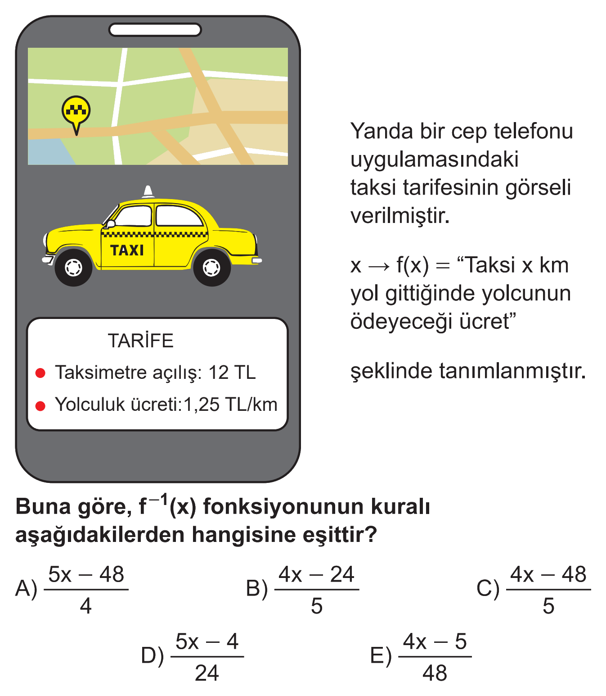
Çözüm
- Ücret $f(x)=12+1{,}25x=12+\dfrac54x$.
- $y=12+\dfrac54x\Rightarrow x=\dfrac45(y-12)$.
- $f^{-1}(x)=\dfrac{4x-48}5$ (C).
Cevap: C
Soru 14Cevap: C
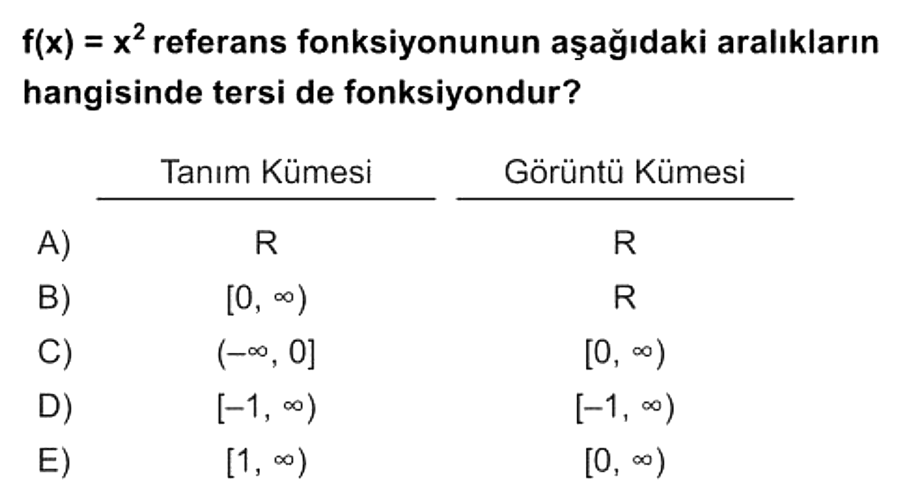
Çözüm
- Tersin fonksiyon olması için $x^2$ bire bir ve örten olmalı.
- Tanım kümesi tepe noktasının bir yanında kalmalı ($(-\infty,0]$ ya da $[0,\infty)$).
- Görüntü kümesi $[0,\infty)$ olmalı: C.
Cevap: C
Soru 15Cevap: A
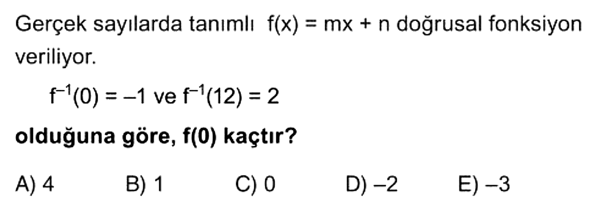
Çözüm
- $f^{-1}(0)=-1\Rightarrow f(-1)=0$; $f^{-1}(12)=2\Rightarrow f(2)=12$.
- $-m+n=0$, $2m+n=12\Rightarrow m=4$, $n=4$.
- $f(0)=n=4$ (A).
Cevap: A
Soru 16Cevap: B
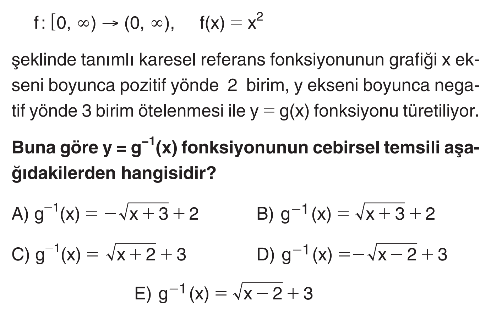
Çözüm
- $g(x)=(x-2)^2-3$, $x\ge2$.
- $(x-2)^2=y+3\Rightarrow x-2=\sqrt{y+3}$.
- $g^{-1}(x)=\sqrt{x+3}+2$ (B).
Cevap: B
Soru 17Cevap: E
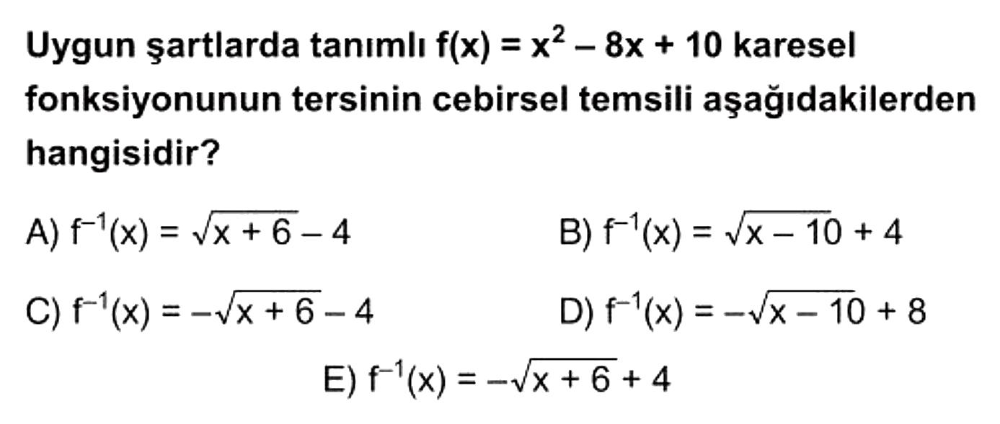
Çözüm
- $x^2-8x+10=(x-4)^2-6\Rightarrow(x-4)^2=y+6$.
- Uygun tanım kümesine göre $x-4=\pm\sqrt{y+6}$.
- Seçeneklerde bulunan biçim $f^{-1}(x)=-\sqrt{x+6}+4$ (E).
Cevap: E
Soru 18Cevap: B
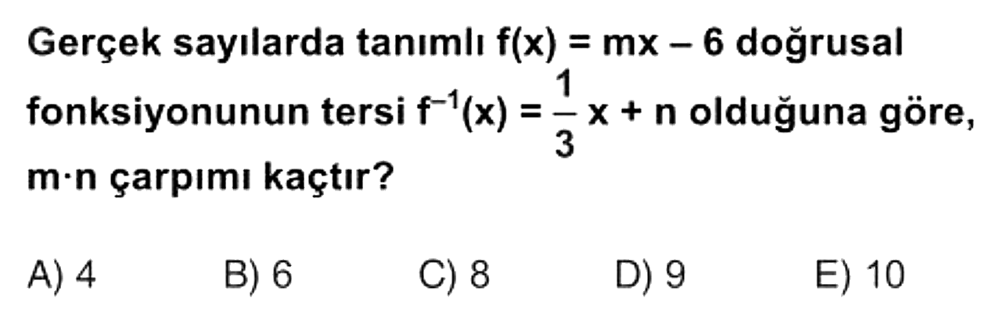
Çözüm
- $y=mx-6\Rightarrow x=\dfrac{y+6}m$: $f^{-1}(x)=\dfrac xm+\dfrac6m$.
- $\dfrac1m=\dfrac13\Rightarrow m=3$; $n=\dfrac63=2$.
- $m\cdot n=6$ (B).
Cevap: B
Soru 19Cevap: E
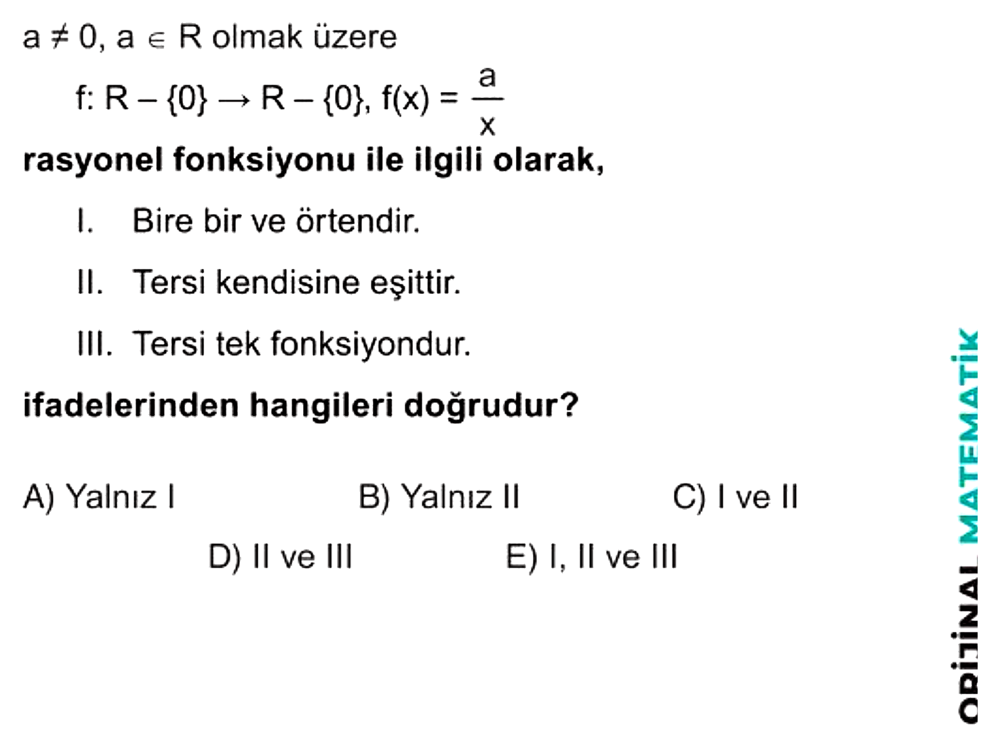
Çözüm
- $\mathbb R-\{0\}\to\mathbb R-\{0\}$, $\dfrac ax$ bire bir ve örtendir (I).
- $y=\dfrac ax\Rightarrow x=\dfrac ay$: tersi kendisidir (II).
- $\dfrac a{-x}=-\dfrac ax$: tersi (kendisi) tek fonksiyondur (III). Cevap E.
Cevap: E
Soru 20Cevap: A
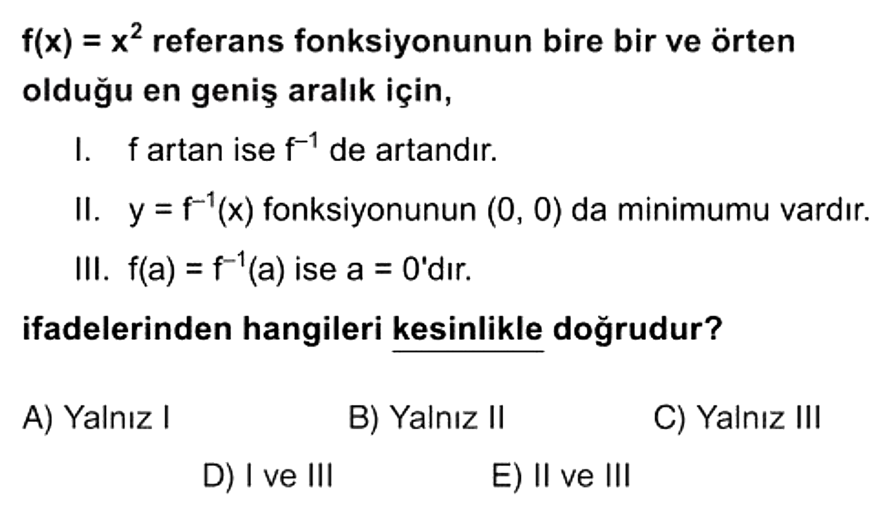
Çözüm
- Bire bir örten olduğu en geniş aralık $[0,\infty)$ ya da $(-\infty,0]$; artan bire bir fonksiyonun tersi artandır (I kesin).
- $(-\infty,0]$ seçilirse $f^{-1}(x)=-\sqrt x$ olur ve $(0,0)$'da maksimumu vardır: II kesin değil.
- $a^2=\sqrt a$'nın çözümleri $0$ ve $1$: III kesin değil. Cevap A.
Cevap: A
Soru 21Cevap: A
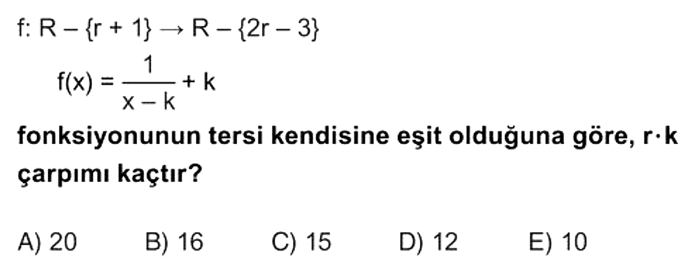
Çözüm
- $y=\dfrac1{x-k}+k\Rightarrow x=\dfrac1{y-k}+k$: tersi her $k$ için kendisidir; tanım kümesi $\mathbb R-\{k\}$, görüntü $\mathbb R-\{k\}$.
- $r+1=k$ ve $2r-3=k\Rightarrow r+1=2r-3$.
- $r=4$, $k=5$; $r\cdot k=20$ (A).
Cevap: A
Soru 22Cevap: E
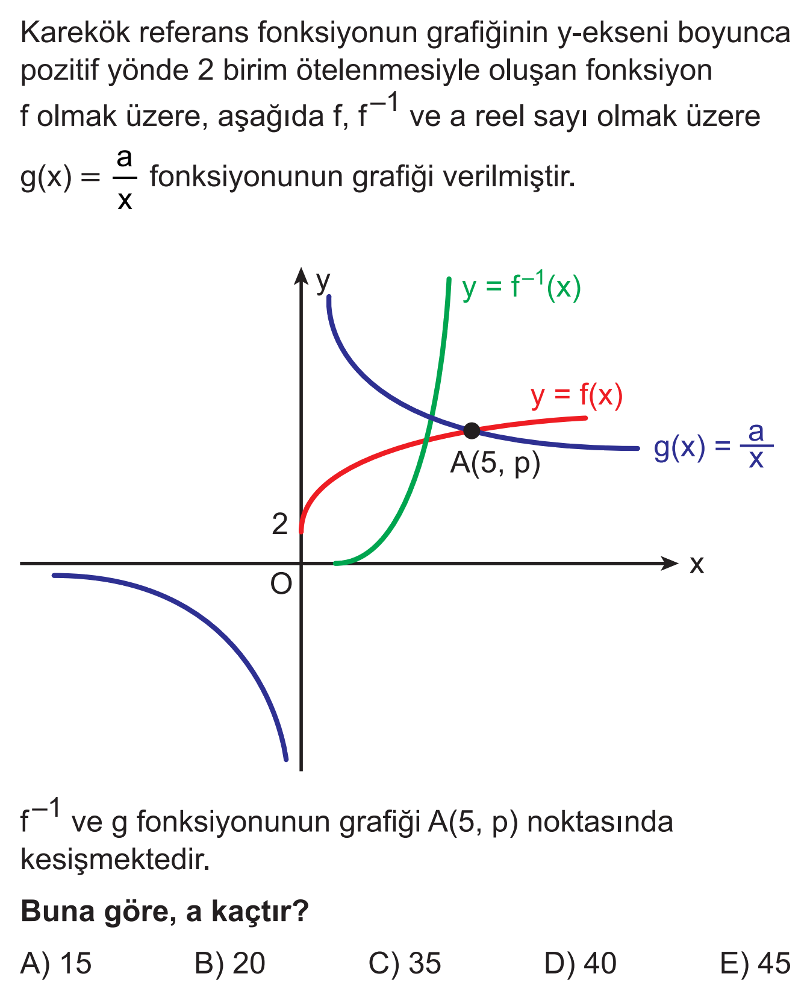
Çözüm
- $f(x)=\sqrt x+2$; $f^{-1}(x)=(x-2)^2$, $x\ge2$.
- $p=f^{-1}(5)=9$: $A(5,9)$.
- $g(5)=\dfrac a5=9\Rightarrow a=45$ (E).
Cevap: E
Soru 23Cevap: D
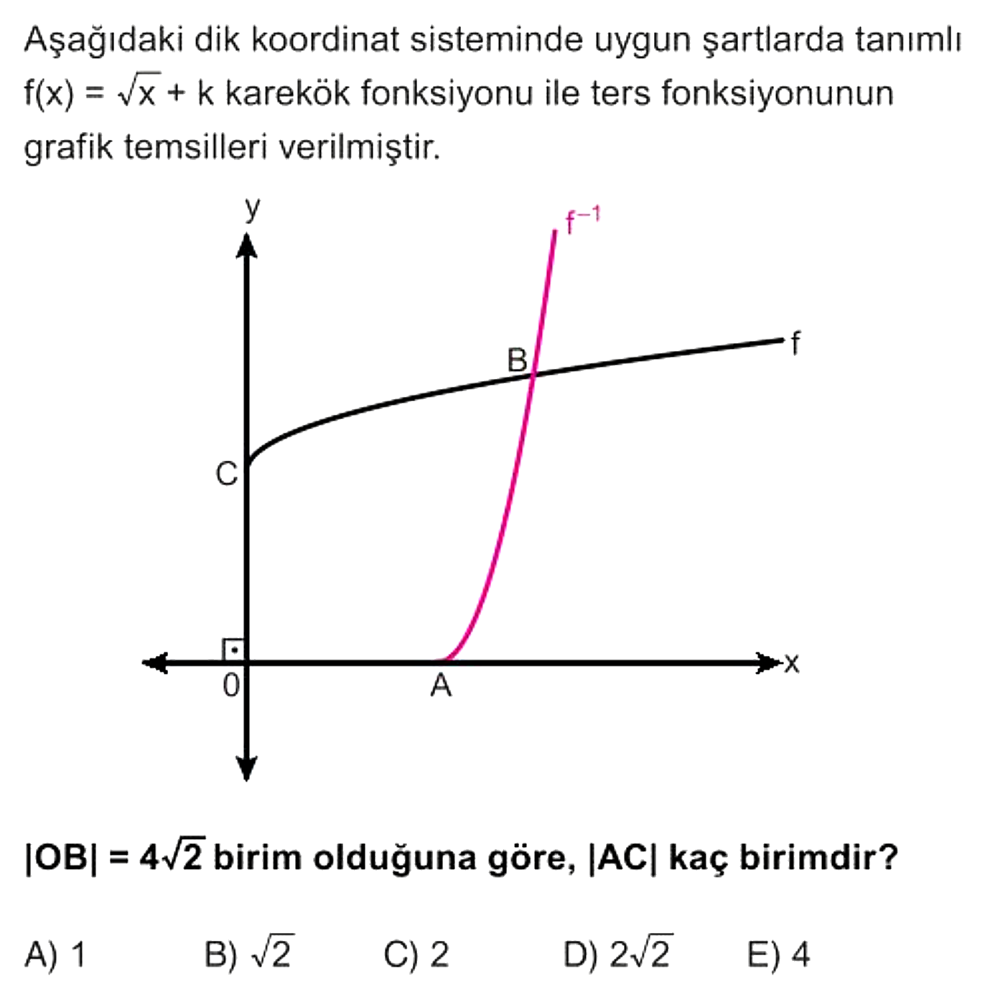
Çözüm
- $f$ ile $f^{-1}$, $y=x$ üzerinde kesişir: $|OB|=4\sqrt2\Rightarrow B(4,4)$.
- $\sqrt4+k=4\Rightarrow k=2$: $C(0,2)$; $A$, $C$'nin simetriği $(2,0)$.
- $|AC|=\sqrt{4+4}=2\sqrt2$ (D).
Cevap: D
Soru 24Cevap: E
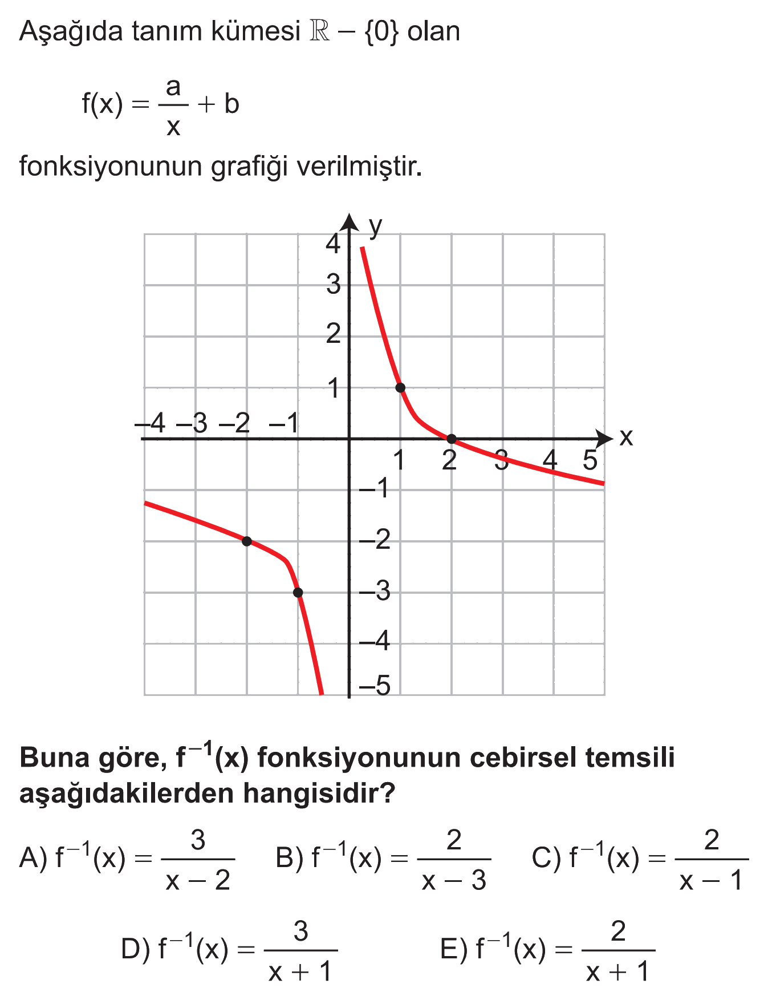
Çözüm
- Yatay asimptot $y=-1$: $b=-1$; $(2,0)$'dan geçer: $\dfrac a2-1=0\Rightarrow a=2$.
- $y=\dfrac2x-1\Rightarrow y+1=\dfrac2x$.
- $x=\dfrac2{y+1}$: $f^{-1}(x)=\dfrac2{x+1}$ (E).
Cevap: E